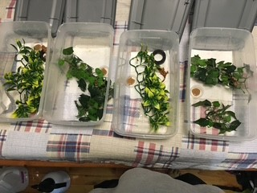
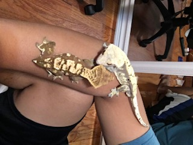

Image of four baby Crested Geckos that I bred
and hatched, along with their hatchling setup.
Herpetoculture involves keeping, breeding, and caring for reptiles,amphibians and invertebrates in
captivity. It emphasizes providing
proper care by mimicking the animals' natural habitats as closely as possible. This includes offering
the right diet, temperature, humidity, and lighting to help the animals thrive. Herpetoculture is about
more than just owning these animals as pets; it's about understanding their behavior, biology, and
environmental needs. Depending on the species, they can be "trained" to respond to specific triggers,
showing that these animals are not just monsters. This hobby also contributes to conservation efforts. I
believe this hobby creates a sense of an invisible "Noah's Ark," as millions of hobbyists worldwide
collect and breed rare and beautiful animals. However, the hobby is not perfect and isn't for everyone.
A major issue with the hobby is irresponsible owners. With the number of people worldwide keeping these
animals, there is equally the threat of animals being released into the wild and becoming invasive
species.
How I got into Reptile Keeping

Image of my first two Crested Geckos who are
the parents of the geckos in the above image.
I take care of a lot of animals.I grew up mainly surrounded by dogs and wanted nothing to do with other
types of animals; I thought they
were creepy and disgusting.
It was not until I watched a YouTube video by The Dark Den that I considered
having other types of animals as pets.
I fell in love with how he educated and took care of his animals in his videos, and thought Why not
give it a try?
My brother and I then converted one of our rooms into a "reptile room" where all our animals are housed.
The animals I currently have are used for educational purposes for my family and friends,
to show that reptiles and other invertebrates can make great memebers of the family and are not just
scary animals.
My mother loves having her friends over and refers to the room as "The Zoo," and I love that I can show
that other types animals are harmless creatures just like dogs.
My Educational Animals
I define an animal as "educational" by how well it behaves and responds to people who are not the immediate keeper (me in this case). I have a variety of animals, meaning that at least one —and possibly the only —of each species is an educational animal under my care. That animal is then regularly handled and interacted with to have them more accustomed to interactions. This allows me to showcase the animal in a more controlled environment, reducing their stress and the risk of endangerment. However, this does not apply to every animal; some do not like being handled or are generally more aggressive than others.